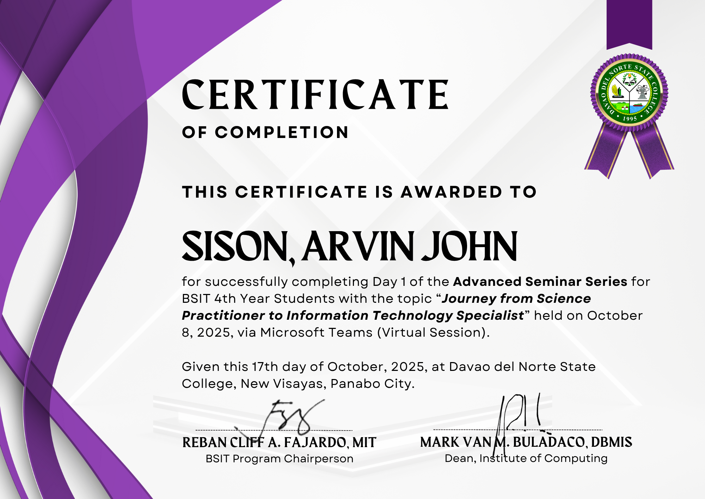

Certifications & Achievements

Introduction to Cybersecurity
Completed a comprehensive course on cybersecurity fundamentals, covering network security, threat analysis, and protection strategies.

CCNA: Switching, Routing, and Wireless Essentials
Successfully completed professional-level networking certification covering advanced switching, routing protocols, and wireless network technologies.

Journey from Science Practitioner to Information Technology Specialist
A certificate recognizing the transition from science practice to IT specialization, highlighting knowledge growth and technical skill development.